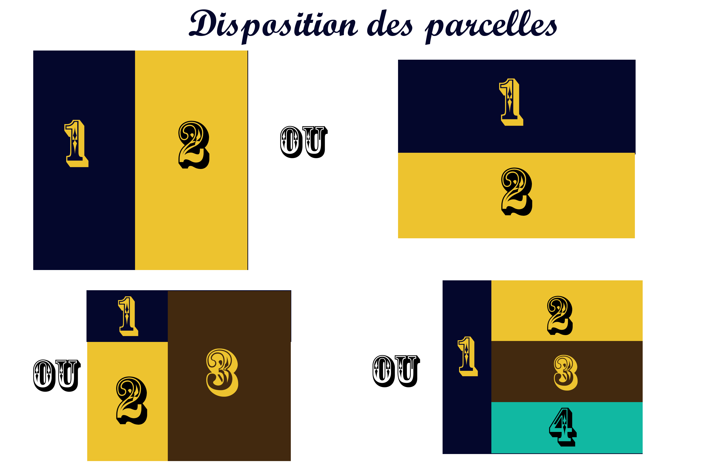

Introduction à cowplot
Un des meilleurs moyens de visualisation de résultats statistiques sont les représentations graphiques. Avec ggplot2, les représentations graphiques sont devenues incontournables. Cette visualisation devient beaucoup plus parlante lorsqu’il est possible de synthétiser l’information contenue dans ces graphiques par leur combinaison. Le package cowplot permet de combiner facilement plusieurs tracés ggplot2. Développé par Claus O. Wilke, ce package offre également des fonctionnalités pour faciliter l’ajout d’annotations sur les graphiques ggplot2. Il a été développé pour fournir un thème aux graphiques ggplot2, qui nécessite peu de manipulations des tailles d’annotations, d’axe, de fond, … Le présent document a pour objectif de faire une présentation du package et de ses fonctionnalités.
Chargement du package et description des données
Nous aurons besoin d’installer (si ce n’est pas déjà fait) et de charger les packages ggplot2 et cowplot.
library(ggplot2)
library(cowplot)
Les données que nous allons utiliser pour présenter nos fonctions sont issues du jeux de données quakes du package datasets. Elles concernent des séismes ayant étés enregistrés aux iles Fidji depuis 1964. Ces données sont présentées sous forme de data frame de 1000 observations issues de 5 variables : la magnitude, la latitude, la longitude et la profondeur du séisme, ainsi que le nombre de stations ayant rapporté le séisme. Nous allons ensuite ajouter deux facteurs à ce data frame :
magFactor, qui représente la magnitude arrondie à l’entier inferieur, avec 3 niveaux : 4,5 ou 6; etregion, qui représente la région où a eu lieu l’événement, prenant les niveaux : Est ou Ouest.
library(datasets)
quakes$magFactor <- factor(floor(quakes$mag))
quakes$region <- factor(quakes$long >= 175, labels = c("Ouest", "Est"))
str(quakes)
## 'data.frame': 1000 obs. of 7 variables:
## $ lat : num -20.4 -20.6 -26 -18 -20.4 ...
## $ long : num 182 181 184 182 182 ...
## $ depth : int 562 650 42 626 649 195 82 194 211 622 ...
## $ mag : num 4.8 4.2 5.4 4.1 4 4 4.8 4.4 4.7 4.3 ...
## $ stations : int 41 15 43 19 11 12 43 15 35 19 ...
## $ magFactor: Factor w/ 3 levels "4","5","6": 1 1 2 1 1 1 1 1 1 1 ...
## $ region : Factor w/ 2 levels "Ouest","Est": 2 2 2 2 2 2 1 2 2 2 ...
summary(quakes)
## lat long depth mag
## Min. :-38.59 Min. :165.7 Min. : 40.0 Min. :4.00
## 1st Qu.:-23.47 1st Qu.:179.6 1st Qu.: 99.0 1st Qu.:4.30
## Median :-20.30 Median :181.4 Median :247.0 Median :4.60
## Mean :-20.64 Mean :179.5 Mean :311.4 Mean :4.62
## 3rd Qu.:-17.64 3rd Qu.:183.2 3rd Qu.:543.0 3rd Qu.:4.90
## Max. :-10.72 Max. :188.1 Max. :680.0 Max. :6.40
## stations magFactor region
## Min. : 10.00 4:802 Ouest:205
## 1st Qu.: 18.00 5:193 Est :795
## Median : 27.00 6: 5
## Mean : 33.42
## 3rd Qu.: 42.00
## Max. :132.00
Création de graphiques simples
Nous allons ensuite poursuivre en créant des graphiques afin d’illustrer les fonctionnalités des différents outils présentés. Certains des graphiques présentés sont issus du cours sur les graphiques en R.
hist <- ggplot(quakes, aes(mag, fill = region)) +
geom_bar()
factor <- ggplot(data = quakes, mapping = aes(x = mag, y = stations)) +
geom_point() +
facet_wrap(facets = ~ region)
diag_dispersion <- ggplot(data = quakes) +
geom_point(mapping = aes(x = mag, y = stations))
cathego <- ggplot(quakes, aes(x = magFactor, y = long, color = region, shape = region)) +
geom_jitter(position = position_jitter(0.2))
density <- ggplot(data = quakes) +
geom_density(mapping = aes(x = mag, fill = region), alpha = 0.5)
violon <- ggplot(quakes, aes(x = region, y = long)) +
geom_violin() +
geom_boxplot(width=0.1)
Mise en forme de graphiques ggplot2
Dans un premier temps nous étudierons comment le package cowplot permet de modifier la mise en forme de graphiques produits par ggplot2.
Le chargement de cowplot conduit à une modification de l’apparence de graphiques ggplot2. En effet ggplot2 produit par défaut des graphiques avec un thème prédéfinit ayant, notamment, une grille blanche sur un fond gris. L’utilisation de ggplot2 est relativement simple, elle requiert le type de graphique à tracer et les variables à représenter. En contrepartie, la mise en forme de graphiques ggplot2 devient rapidement compliquée.
Le fait de charger le package cowplot modifie l’apparence du graphique. Il enlève la grille de fond pour permettre d’obtenir un fond blanc et change un peu le format des axes et des annotations. Pour éviter ces modifications, il faut prendre le theme_gray qui reproduit la mise en forme par défaut effectuée par ggplot2.
hist

hist + theme_gray()

On peut également modifier le thème de base de cowplot, c’est-à-dire changer de police, de taille (titre, titre et échelle des axes) ainsi que l’épaisseur des axes. Ceci est possible avec la fonction theme_cowplot.
hist + theme_cowplot(font_size = 16, font_family = "", line_size = 0.9)

L’utilisation de la fonction theme_set permet de définir un thème commun à tous les autres graphiques produits par la suite.
theme_set(theme_cowplot(font_size = 12, font_family = "", line_size = 0.5))
Il est aussi possible de modifier le fond des graphiques. ggplot2 produit une grille de fond, mais celle-ci est assez imposante. Ainsi la fonction background_grid de cowplot permet de contrôler cette grille. La fonction prend comme arguments le major de la grille, c’est à dire l’axe qui aura les traits les plus épais, et aussi le minor, soit l’axe avec le tracé plus fin. Ensuite, nous pouvons modifier la taille et la couleur des axes major ou minor.
hist + background_grid(major = "x", minor = "y",
size.major = 0.1, size.minor = 0.5,
colour.major = "gray90", colour.minor = "grey")

Le package cowplot permet de modifier les bordures des graphiques avec la fonction panel_border. L’argument remove = TRUE enlève les bordures existantes, s’il y en a. Les arguments colour, size et linetype servent à spécifier la couleur, l’épaisseur et le type de ligne des bordures.
factor

factor + panel_border(colour = "grey", size = 0.5, linetype = 1)

Ajout d’annotations
Poursuivons en examinant les différentes possibilités d’ajout d’annotations sur un graphique ggplot2 permises par cowplot.
La fonction draw_line permet d’ajouter une ligne reliant certains points par-dessus le graphique initial. Pour cela, il faut préciser les coordonnées des points à relier, la couleur et l’épaisseur de la ligne.
Reg <- lm(stations ~ mag, data = quakes)
x <- seq(4,6,0.1)
y <- Reg$coefficients[2]*x + Reg$coefficients[1]
diag_dispersion + draw_line(x = x, y = y, color = "blue", size = 2)

Une autre fonction qui permet l’ajout d’annotations sur un graphique est draw_figure_label. Les arguments de cette fonction sont : l’expression à ajouter ; puis la position où la mettre, dont les options sont top.left, top, top.right, bottom.left, bottom, bottom.right (la valeur par défaut est top.left). Il est optionnel de préciser la police et la taille voulues pour l’expression. Cependant, la fonction ajoute l’annotation à l’intérieur de la zone graphique, ce qui cause un décalage de la représentation. L’ajout de la fonction ggdraw permet de corriger ce problème en séparant la zone graphique de l’annotation.
ggdraw(cathego) + draw_figure_label(label = "Figure 1", position = "top.right", fontface = "bold")

Pour ajouter des annotations sous le graphique, nous avons recours à la fonction add_sub. Après avoir précisé le graphique que nous souhaitons utiliser et l’expression à écrire, nous avons recours à la fonction ggdraw pour afficher correctement le graphique, car add_sub retourne une liste.
ggdraw(add_sub(cathego,
"Les triangles bleus representent la region Est.\nLes points oranges representent la region Ouest."
))

La fonction draw_label permet quant à elle d’ajouter, par exemple, une expression mathématique sur un graphique.
moy <- mean(quakes$mag)
et <- sd(quakes$mag)
graph <- ggplot(data = quakes, mapping = aes(x = mag)) +
geom_histogram(mapping = aes(y = stat(density)),
binwidth = 0.2, colour = "black", fill = "white") +
labs(x = "magnitude", y = "densité",
title = "Densité empirique des magnitudes dans le jeu de données quakes") +
# Ajout d'une courbe de densité théorique, paramètres estimés avec les données
stat_function(fun = dnorm, args = list(mean = moy, sd = et),
xlim = c(3.9, 6.5), colour = "blue")
label <- expression(paste("Densité N(", mu, " = ", 4.6, ", ", sigma^2, " = ", 0.4^2, ")"))
graph + draw_label(label, x = 5.4, y = 0.40, hjust = 0, vjust = 0, colour = "blue")

Combinaison de graphiques : fonction plot_grid
La fonction plot_grid permet de combiner plusieurs graphiques dans une grille.
Voici une brève description de ses arguments :
... |
graphiques à organiser dans la grille |
plotlist = NULL |
liste des graphiques à organiser dans la grille, si non fournis via ... |
align = c("none", "h", "v", "hv") |
alignement (vertical ou horizontal) des graphiques |
axis = c("none", "l", "r", "t", "b", "lr", "tb", "tblr") |
marge par rapport auxquelles effectuer l’alignement |
nrow = NULL |
nombre de lignes dans la grille |
ncol = NULL |
nombre de colonnes dans la grille |
rel_widths = 1 |
largeurs relatives des colonnes |
rel_heights = 1 |
hauteurs relatives des colonnes |
labels = NULL |
liste des étiquettes à ajouter aux graphiques |
label_size = 14 |
taille des étiquettes |
label_fontfamily = NULL |
famille de police de caractères des étiquettes |
label_fontface = "bold" |
mise en relief de la police de caractères des étiquettes |
label_colour = NULL |
couleur des étiquettes |
label_x = 0 |
positions pour les étiquettes sur l’axe des abscisses |
label_y = 1 |
positions pour les étiquettes sur l’axe des ordonnées |
hjust = -0.5 |
ajustement horizontal de chaque étiquette |
vjust = 1.5 |
ajustement vertical de chaque étiquette |
scale = 1 |
réglage de l’échelle |
Combien de graphiques peut-on combiner ?
La fonction plot_grid peut combiner le nombre désiré de graphiques. La combinaison est très simple. Essayons de combiner 4 graphiques simples crées auparavant (diag_dispersion, density, violon et cathego).
plot_grid(diag_dispersion, density, violon, cathego)

Remarquons que le remplissage de la grille de graphiques se fait ligne par ligne.
En plus d’avoir le choix du nombre de graphiques, nous pouvons décider d’afficher un graphique vide. Pour cela, on utilise NULL comme nom du graphique. Essayons d’afficher (diag_dispersion, density, violon) avec un graphique vide.
plot_grid(diag_dispersion, NULL, density, violon)

Est-ce possible d’ajouter des identifiants ?
Il est possible avec la fonction plot_grid d’ajouter des identifiants aux graphiques combinés et de mettre en forme ces identifiants. Avec labels = "AUTO", nous obtenons des identifiants générés automatiquement, sous forme de lettres majuscules.
plot_grid(diag_dispersion, density, violon, cathego, labels = "AUTO")

Avec labels = "auto", nous obtenons des identifiants sous forme de lettres minuscules.
plot_grid(diag_dispersion, density, violon, cathego, labels = "auto")

Nous pouvons également spécifier les identifiants à utiliser, par exemple avec labels = c("1", "2", "3", "4").
plot_grid(diag_dispersion, density, violon, cathego, labels = c("1", "2", "3", "4"))

Le changement de police, de couleur et d’emplacement des identifiants est possible avec label_size, label_colour et lable_y.
plot_grid(diag_dispersion, density, violon, cathego,
labels = c("1", "2", "3", "4"),
label_size = 16, label_colour = 'Blue', label_y = 0.4)

Peut-on modifier l’affichage des graphiques ?
Il est possible de modifier l’affichage des graphiques en jouant avec les parcelles. La grille est constituée de parcelles dans lesquelles sont disposés nos graphiques. Par défaut, la disposition des parcelles est déterminée automatiquement par la fonction. Avec les paramètres ncol et nrow, on peut manipuler le nombre et la disposition des parcelles dans lesquelles les graphiques seront placés. Les graphiques s’adaptent aux dimensions des parcelles. Voici quelques exemples de dispositions de parcelles.

Avec ncol = 2 et nrow = 2, on obtient 4 parcelles sous la forme d’une matrice 2x2, mais ncol = 1 et nrow = 4, donnent 4 parcelles sous la forme d’une matrice 4x1.
plot_grid(diag_dispersion, density, violon, cathego,
labels = c("1", "2", "3", "4"), label_size = 16, label_colour = 'Blue',
ncol = 2, nrow = 2)

plot_grid(diag_dispersion, density, violon, cathego,
labels = c("1", "2", "3", "4"), label_size = 16, label_colour = 'Blue',
ncol = 1, nrow = 4)

Il est possible de définir plus de parcelles que de graphiques.
plot_grid(diag_dispersion, density, violon,
labels = c("1", "2", "3"), label_size = 16, label_colour = 'Blue',
ncol = 2, nrow = 2)

Il est également possible de modifier la dimension relative des parcelles. On pourrait, par exemple, souhaiter que la 2e colonne soit 3 fois plus grande que la première, ou simplement que la première ligne soit plus petite que les autres. Les paramètres rel_widths et rel_heights permettent de faire ces ajustements. Cela nous permet de mettre en valeur un graphique plus important que les autres.
plot_grid(diag_dispersion, density, violon, cathego,
labels = c("1", "2", "3", "4"), label_size = 16, label_colour = 'Blue',
ncol = 2, nrow = 2,
rel_widths = c(1, 3), rel_heights = c(3, 1))

Si on souhaite diminuer l’aperçu global de nos graphiques, on peut utiliser scale qui permet de modifier l’échelle de la grille. Le résultat n’est pas excellent, donc pas illustré ici.
Combinaison de graphiques : fonction draw_plot
La fonction draw_plot permet également de combiner les graphiques, mais faut il faut définir les positions de chaque graphique. Voici une brève description des paramètres de cette fonction :
plot |
graphique à ajouter |
x = 0 |
emplacement x (gauche/droite) du coin inférieur gauche du graphique |
y = 0 |
emplacement y (en haut/en bas) du coin inférieur gauche du graphique |
width = 1 |
largeur de la parcelle |
height = 1 |
hauteur de la parcelle |
scale = 1 |
réglage de l’échelle |
La fonction draw_plot s’utilise avec la fonction ggdraw, qui permet d’initialiser un graphique.
Essayons de combiner nos 4 graphiques :
x = 0, y = 0.5 permet de placer le 1er graphique en haut à gauche;x = 0.5, y = 0.5 permet de placer le 2e graphique en haut à droite;x = 0, y = 0 permet de placer le 3e graphique en en bas à gauche;x = 0.5, y = 0 permet de placer le 4e graphique en en bas à droite;width = 0.5, height = 0.5 permet de définir la même taille pour tous les graphiques.
À la différence de plot_grid, la fonction draw_plot prend un seul graphique à la fois.
ggdraw() +
draw_plot(diag_dispersion, x = 0, y = 0.5, width = 0.5, height = 0.5) +
draw_plot(density, x = 0.5, y = 0.5, width = 0.5, height = 0.5) +
draw_plot(violon, x = 0, y = 0, width = 0.5, height = 0.5) +
draw_plot(cathego, x = 0.5, y = 0, width = 0.5, height = 0.5)

On peut même superposer deux graphiques, il suffit de jouer avec la position et la dimension des graphiques.
ggdraw() +
draw_plot(density, x = 0, y = 0, width = 1, height = 1) +
draw_plot(hist, x = 0.5, y = 0.5, width = 0.5, height = 0.4)

Est-ce possible d’ajouter des identifiants ?
Nous pouvons afficher les identifiants et modifier la couleur, la taille et la police de ceux-ci avec la fonction draw_plot_label.
ggdraw() +
draw_plot(diag_dispersion, x = 0, y = 0.5, width = 0.5, height = 0.5) +
draw_plot(density, x = 0.5, y = 0.5, width = 0.5, height = 0.5) +
draw_plot(violon, x = 0, y = 0, width = 0.5, height = 0.5) +
draw_plot(cathego, x = 0.5, y = 0, width = 0.5, height = 0.5) +
draw_plot_label(label = c("A", "B", "C", "D"),
x = c(0, 0.5, 0, 0.5), y = c(1, 1, 0.5, 0.5),
size = 14, colour = 'blue')

plot_grid(a, legend, rel_widths = c(1, 0.2)) +
draw_plot_label(label = c("A", "B"),
x = c(0, 0.4), y = c(1, 0.9),
size = 20, colour = "purple")

Sauvegarde d’une grille de graphiques avec la fonction save_plot
Lorsque l’on travaille avec cowplot, la fonction save_plot est utilisée pour enregistrer une grille de graphiques. C’est une alternative à ggsave avec un meilleur support pour les graphiques multi-figures. Voici une brève description des paramètres de la fonction save_plot :
filename |
nom du fichier à créer |
plot |
graphique à enregister |
ncol = 1 |
nombre de parcelles par colonne |
nrow = 1 |
nombre de parcelles par ligne |
base_height = 4 |
hauteur des parcelles |
base_aspect_ratio = 1.1 |
rapport largeur/hauteur des parcelles |
base_width = NULL |
largeur des parcelles (déduit de base_height et base_aspect_ratio par défaut) |
... |
autres arguments à passer à ggsave au besoin |
Il est possible d’enregistrer la grille au format PDF, PNG et JPG.
Pour enregistrer une grille, save_plot et plot_grid doivent avoir les mêmes valeurs pour nrow et ncol.
graphique_final <-
plot_grid(diag_dispersion, density, violon, cathego,
labels=c("1", "2", "3","4"),label_size = 16, label_colour = 'Blue',
ncol = 2, nrow = 2)
#format PDF
save_plot("graphique_final.pdf", graphique_final,
ncol = 2, nrow = 2, base_aspect_ratio = 1.3)
#format PNG
save_plot("graphique_final.png", graphique_final,
ncol = 2, nrow = 2, base_aspect_ratio = 1.3)
#format JPG
save_plot("graphique_final.jpg", graphique_final,
ncol = 2, nrow = 2, base_aspect_ratio = 1.3)
Observations personnelles sur le package
Le package cowplot est relativement facile d’utilisation, notamment pour la combinaison de graphiques. Il permet de faciliter la production de graphiques destinés aux publications scientifiques.
Bien que le package cowplot soit assez bien documenté dans l’ensemble, certaines fonctions demeurent assez peu documentées.
Dans certains cas, avoir une légende commune pour des graphiques de même type permet une simplicité dans la présentation. Un des points négatifs de cowplot est qu’il n’offre pas la possibilité de faire facilement une légende pour tous les graphiques mis en commun par la fonction plot_grid.
De plus cowplot ne permet pas la combinaison de graphiques, de tables et de textes. Ces fonctionnalités sont offertes par d’autres packages tel que gridExtra par exemple.
7.1 Comment avoir une légende commune ?
La possibilité de récupérer la légende d’un graphique
ggplot2est offerte parcowplotavec la fonctionget_legend. Cette fonction peut s’avérer utile lorque l’on cherche à enlever les légendes individuelles de graphiques dans le but de les regrouper et de leur assigner une légende commune.Dans l’exemple précèdent, nous pourrions souhaiter obtenir une même légende pour les deux graphiques. Alors nous pouvons retirer les légendes individuelles avec
theme(legend.position = 'none'), puis en remettre une, préalablement extraite avecget_legend, à l’aide de la fonctionplot_grid.